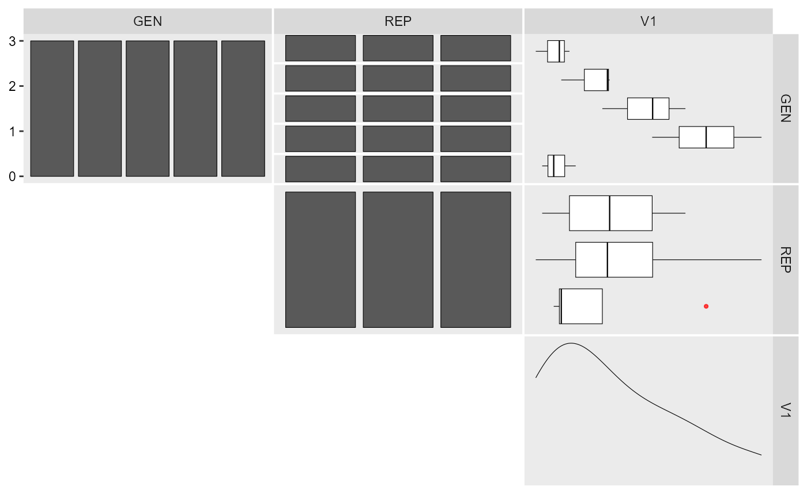
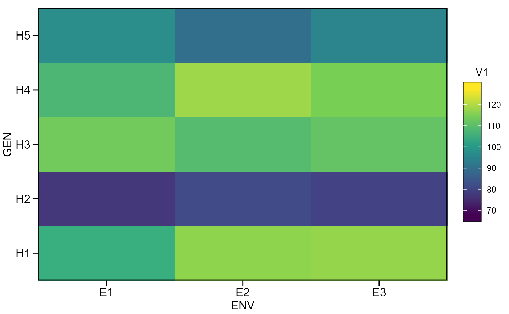
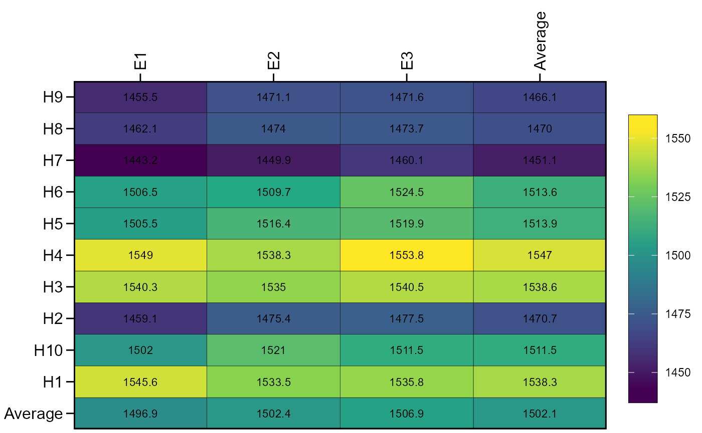

![[Experimental]](figures/lifecycle-experimental.svg)
g_simula()simulate replicated genotype data.ge_simula()simulate replicated genotype-environment data.
Usage
ge_simula(
ngen,
nenv,
nrep,
nvars = 1,
gen_eff = 20,
env_eff = 15,
rep_eff = 5,
ge_eff = 10,
res_eff = 5,
intercept = 100,
seed = NULL
)
g_simula(
ngen,
nrep,
nvars = 1,
gen_eff = 20,
rep_eff = 5,
res_eff = 5,
intercept = 100,
seed = NULL
)Arguments
- ngen
The number of genotypes.
- nenv
The number of environments.
- nrep
The number of replications.
- nvars
The number of traits.
- gen_eff
The genotype effect.
- env_eff
The environment effect
- rep_eff
The replication effect
- ge_eff
The genotype-environment interaction effect.
- res_eff
The residual effect. The effect is sampled from a normal distribution with zero mean and standard deviation equal to
res_eff. Be sure to changeres_effwhen changin theinterceptscale.- intercept
The intercept.
- seed
The seed.
Details
The functions simulate genotype or genotype-environment data given a
desired number of genotypes, environments and effects. All effects are
sampled from an uniform distribution. For example, given 10 genotypes, and
gen_eff = 30, the genotype effects will be sampled as runif(10, min = -30, max = 30). Use the argument seed to ensure reproducibility. If more
than one trait is used (nvars > 1), the effects and seed can be passed as
a numeric vector. Single numeric values will be recycled with a warning
when more than one trait is used.
Author
Tiago Olivoto tiagoolivoto@gmail.com
Examples
# \donttest{
library(metan)
# Genotype data (5 genotypes and 3 replicates)
gen_data <-
g_simula(ngen = 5,
nrep = 3,
seed = 1)
gen_data
#> # A tibble: 15 × 3
#> GEN REP V1
#> <fct> <fct> <dbl>
#> 1 H1 B1 96.3
#> 2 H1 B2 91.0
#> 3 H1 B3 94.7
#> 4 H2 B1 103.
#> 5 H2 B2 102.
#> 6 H2 B3 95.0
#> 7 H3 B1 114.
#> 8 H3 B2 109.
#> 9 H3 B3 101.
#> 10 H4 B1 109.
#> 11 H4 B2 126.
#> 12 H4 B3 118.
#> 13 H5 B1 92.0
#> 14 H5 B2 97.2
#> 15 H5 B3 93.8
inspect(gen_data, plot = TRUE)
#> # A tibble: 3 × 10
#> Variable Class Missing Levels Valid_n Min Median Max Outlier Text
#> <chr> <chr> <chr> <chr> <int> <dbl> <dbl> <dbl> <dbl> <lgl>
#> 1 GEN factor No 5 15 NA NA NA NA NA
#> 2 REP factor No 3 15 NA NA NA NA NA
#> 3 V1 numeric No - 15 91.0 101. 126. 0 NA
#> Warning: Expected three or more factor variables. The data has only 2.

aov(V1 ~ GEN + REP, data = gen_data) %>% anova()
#> Analysis of Variance Table
#>
#> Response: V1
#> Df Sum Sq Mean Sq F value Pr(>F)
#> GEN 4 1242.03 310.508 10.1917 0.003146 **
#> REP 2 55.60 27.798 0.9124 0.439611
#> Residuals 8 243.74 30.467
#> ---
#> Signif. codes: 0 '***' 0.001 '**' 0.01 '*' 0.05 '.' 0.1 ' ' 1
# Genotype-environment data
# 5 genotypes, 3 environments, 4 replicates and 2 traits
df <-
ge_simula(ngen = 5,
nenv = 3,
nrep = 4,
nvars = 2,
seed = 1)
#> Warning: 'gen_eff = 20' recycled for all the 2 traits.
#> Warning: 'env_eff = 15' recycled for all the 2 traits.
#> Warning: 'rep_eff = 5' recycled for all the 2 traits.
#> Warning: 'ge_eff = 10' recycled for all the 2 traits.
#> Warning: 'res_eff = 5' recycled for all the 2 traits.
#> Warning: 'intercept = 100' recycled for all the 2 traits.
#> Warning: 'seed = 1' recycled for all the 2 traits.
ge_plot(df, ENV, GEN, V1)

aov(V1 ~ ENV*GEN + ENV/REP, data = df) %>% anova()
#> Analysis of Variance Table
#>
#> Response: V1
#> Df Sum Sq Mean Sq F value Pr(>F)
#> ENV 2 363.7 181.83 13.0240 5.551e-05 ***
#> GEN 4 12319.5 3079.87 220.6002 < 2.2e-16 ***
#> ENV:GEN 8 643.9 80.48 5.7647 9.551e-05 ***
#> ENV:REP 9 426.2 47.36 3.3920 0.00415 **
#> Residuals 36 502.6 13.96
#> ---
#> Signif. codes: 0 '***' 0.001 '**' 0.01 '*' 0.05 '.' 0.1 ' ' 1
# Change genotype effect (trait 1 with fewer differences among genotypes)
# Define different intercepts for the two traits
df2 <-
ge_simula(ngen = 10,
nenv = 3,
nrep = 4,
nvars = 2,
gen_eff = c(1, 50),
intercept = c(80, 1500),
seed = 1)
#> Warning: 'env_eff = 15' recycled for all the 2 traits.
#> Warning: 'rep_eff = 5' recycled for all the 2 traits.
#> Warning: 'ge_eff = 10' recycled for all the 2 traits.
#> Warning: 'res_eff = 5' recycled for all the 2 traits.
#> Warning: 'seed = 1' recycled for all the 2 traits.
ge_plot(df2, ENV, GEN, V2)

# }